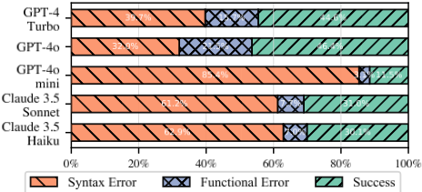
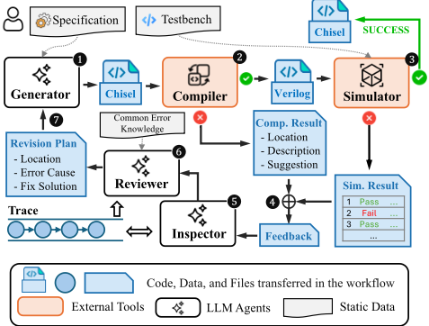
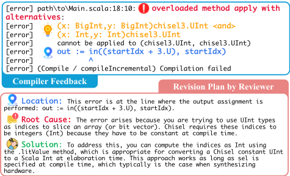
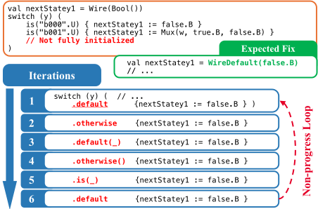
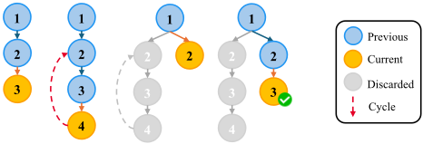
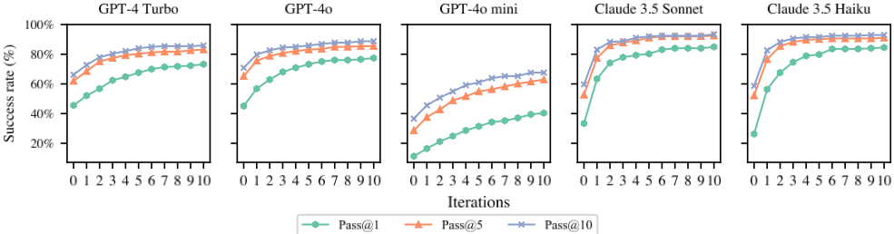
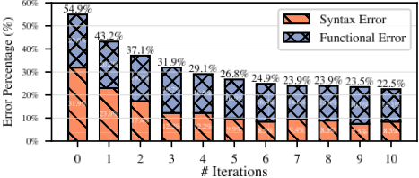

ReChisel：基于反思机制的 LLM 高效 Chisel 代码自动生成
论文针对主流 LLM 生成 Chisel 代码能力薄弱的问题——Chisel 公开代码量仅约为 Verilog 的 1/20，零样本生成成功率显著低于 Verilog 且大量错误集中在编译阶段——提出 ReChisel，一个基于 LLM 的 agentic 代码生成系统。其核心是以编译与仿真反馈驱动的反思机制：Generator 依据 spec 生成 Chisel 代码，经 Compiler 编译为 Verilog 后由 Simulator 对照参考模块做功能测试，失败时由 Inspector 维护迭代 trace、Reviewer 生成修订计划回传 Generator 迭代修正；并针对 LLM 反复陷入同一错误循环的非进展循环问题设计 escape 机制，丢弃循环内迭代并重新生成修订计划。在 VerilogEval Spec-to-RTL、HDLBits、RTLLM 共 216 个用例与 5 个主流 LLM 上，成功率提升 10%~50%，Claude 3.5 Sonnet 达 Pass@1 84.98%、Pass@10 93.43%，整体达到与面向 Verilog 的 SOTA 系统 AutoChip 相当的水平，表明 Chisel 在 LLM 辅助硬件设计中具有潜力。
LLM 辅助 HDL 编码的已有研究几乎全部聚焦 Verilog，而 Chisel 作为基于 Scala 的新一代 HDL 公开代码极少（GitHub 上约为 Verilog 的 1/20），主流 LLM 零样本生成 Chisel 代码的成功率显著偏低，且很大比例错误发生在编译阶段（语法错误）。论文要回答：能否用 agentic 方法有效提升 LLM 生成 Chisel 代码的成功率，使其达到与 Verilog 生成相当的水平。
ReChisel 是一个 LLM-based agentic 系统：Generator 依据 spec 生成 Chisel 代码，Compiler 将其编译为 Verilog，Simulator 将其作为 DUT 与参考模块在功能点（输入激励+期望输出）上比对；失败时按错误类型采用不同反馈策略——编译期语法错误（含编译器静态检出的未初始化信号、组合环等逻辑错误）整理为错误列表，仿真期功能错误提取失败测试点的输入、期望输出与实际输出，反馈给 Inspector 维护的迭代 trace，Reviewer 分析 trace 形成含错误位置、原因分析与解决方案的修订计划回传 Generator。对常见错误（Scala/Chisel 语法混用、信号类型、clock domain 等）采用 in-context learning 预置原因与修复指引。针对非进展循环设计 escape 机制：Inspector 将当前反馈与 trace 中历史条目比对，若错误位置与原因相同则判定为循环，丢弃循环内全部迭代并从循环前一步重新生成修订计划。最大迭代次数设为 10。
在 VerilogEval Spec-to-RTL、AutoChip's HDLBits、RTLLM 筛选后的 216 个有效用例、5 个主流 LLM（GPT-4 Turbo、GPT-4o、GPT-4o mini、Claude 3.5 Sonnet、Claude 3.5 Haiku）上，ReChisel 将 Chisel 代码生成成功率提升 10%~50%
Claude 3.5 Sonnet 取得最高成功率：Pass@1 84.98%、Pass@10 93.43%；Claude 3.5 Haiku 性能接近 Sonnet，甚至超过 GPT-4o 与 GPT-4 Turbo
与面向 Verilog 的 SOTA agentic 系统 AutoChip 对比，ReChisel 的 Chisel 生成性能达到几乎可比水平；GPT-4o 模型下 ReChisel 在 Pass@5 与 Pass@10 上超过 AutoChip
约 4 次迭代后除 GPT-4o mini 外所有 LLM 达到性能平台期；GPT-4o mini 平台期后仍有约 10% 用例无法正确生成
零样本基线实验显示 LLM 生成 Chisel 能力显著弱于 Verilog，且很大比例错误来自编译阶段；GitHub 上公开 Verilog/SystemVerilog 代码约 160 万行，而导入 Chisel 扩展的 Scala 代码仅约 8.01 万行
已有 LLM 辅助硬件设计工作（RTLCoder、RTLRewriter、AutoChip、VerilogCoder 等）几乎全部针对 Verilog，本文系统研究了被忽视的 Chisel 代码生成问题并给出 agentic 解决方案；除编译/仿真反馈驱动的反思机制外，还提出针对非进展循环的 escape 机制，并通过 Chisel 与 Verilog 生成的对照实验，回答了'直接生成 Verilog 还是生成 Chisel 再编译'这一开放问题。
相关度级别：high
命中能力域：2.7 EDA/验证自动化与 AI 辅助 | 2.2 RTL 设计与实现
理由：直接命中 2.7 域'LLM/AI 辅助 RTL 生成'的核心技术：论文构建了以编译与仿真反馈驱动的 agentic 反思系统，自动生成可通过功能验证的 RTL 代码（Chisel 编译为 Verilog），并沉淀了按错误类型定制的反馈策略、常见错误 in-context learning 库与非进展循环 escape 机制等可复用方法学，与团队'沉淀可复用方法学与自动化能力'的定位高度一致；其正确性判定依赖编译器静态检查（未初始化信号、组合环）与仿真功能点比对，也与 2.2 域的 RTL 质量实践相关。尽管团队当前设计语言以 Verilog/SystemVerilog 为主而非 Chisel，但反思+反馈的 agentic 框架与 escape 机制对 Verilog 生成同样适用（论文与 AutoChip 的对照实验即为佐证），对团队建设 LLM 辅助 RTL 生成与调试自动化能力有直接参考价值。
建议动作：深入精读并做内部分享
arXiv:2505.19734v1 [cs.AI] 2025年5月26日
ReChisel：基于反思机制的大语言模型高效自动 Chisel 代码生成
Juxin Niu 1 , Xiangfeng Liu 1,2 , Dan Niu 3 , Xi Wang 4,5* , Zhe Jiang 4,5 , Nan Guan 1*
1 香港城市大学计算机科学系，中国香港特别行政区
2 东北大学计算机科学与工程学院，中国
3 东南大学自动化学院，中国
4 国家EDA技术创新中心，中国 5 东南大学集成电路学院，中国 Email: juxin.niu@my.cityu.edu.hk, xiangfengliu.cn@gmail.com, 101011786@seu.edu.cn, xi.wang@seu.edu.cn,
zhejiang.arch@gmail.com, nanguan@cityu.edu.hk
* 通讯作者。
摘要——使用 Verilog 等硬件描述语言（HDL）进行编码是一项耗时且繁重的任务。随着大语言模型（LLM）的快速发展，应用 LLM 辅助 HDL 编码日益受到关注。近期的研究已经展示了 LLM 在将自然语言转换为传统 HDL Verilog 方面的潜力。Chisel 是一种基于 Scala 的新一代 HDL，引入了更高层次的抽象，有助于实现更简洁、更易维护、更可扩展的硬件设计。然而，利用 LLM 进行 Chisel 代码生成的潜力在很大程度上仍未被探索。本工作提出了 ReChisel，一个旨在提升 Chisel 代码生成有效性的基于 LLM 的智能体（agentic）系统。ReChisel 引入了一种反思（reflection）机制，利用编译和仿真过程的反馈迭代地改进生成代码的质量，并引入了一种逃逸（escape）机制以摆脱无进展循环。实验表明，ReChisel 显著提高了 Chisel 代码生成的成功率，其性能可与最先进的用于 Verilog 代码生成的基于 LLM 的智能体系统相媲美。
在硬件设计中，使用 Verilog 等硬件描述语言（HDL）进行编码通常是一项耗时且费力的任务。大语言模型（LLM）不仅在软件领域，也在硬件设计中展现出了辅助编码过程的良好能力。近来，LLM 已被用于将自然语言翻译为 HDL 代码 [11]、[25]，辅助调试 [27]、[33]，以及优化代码实现以提升性能、功耗和面积（PPA）等关键芯片指标 [34]。这些工作主要聚焦于 Verilog 等传统 HDL。
Chisel [2] 是一种嵌入在 Scala 中的下一代 HDL，可促进先进的电路设计。与主要面向寄存器传输级（RTL）、且往往需要详细低层规格描述的 Verilog 不同，Chisel 通过面向对象和函数式编程特性提供了更高层次的抽象。这种方式带来了更简洁、更易维护且更具可扩展性的设计 [10]。由于与敏捷设计方法学的兼容性，Chisel 在复杂硬件设计中日益流行 [13]，包括处理器（如 XiangShan [31]、BOOM [36] 和 RocketChip [1]）、加速器（如 MAGMA-Si [6] 和 Gemmini [8]）等众多设计。
然而，利用 LLM 进行 Chisel 代码生成的潜力在很大程度上仍未被探索。作为一种相对较新的语言，Chisel 在网上公开可用的代码要少得多——例如，GitHub 上 Chisel 代码的数量仅为 Verilog 的约 1/20——这限制了 LLM 有效生成 Chisel 代码可用的训练数据。为了更好地理解这些局限，我们进行了实验，评估主流 LLM 在零样本（zero-shot）设置下自动生成 Chisel 代码的基线性能。实验结果表明，这些 LLM 的基线能力确实有限。
本文提出 ReChisel，一种基于大语言模型（LLM）的智能体（agentic）系统，旨在提高利用 LLM 进行 Chisel 代码生成的有效性。ReChisel 引入了一种反思（reflection）机制，利用迭代过程来改进生成代码的质量。其关键洞察在于利用编译和仿真过程的反馈来引导 LLM 纠正错误。此外，我们观察到，在反思过程中，LLM 可能陷入无进展循环。为克服这一问题，我们开发了一种逃逸（escape）机制，使 LLM 能够摆脱这些循环并恢复有效的尝试。我们在三个基准测试上评估了 ReChisel 的性能，即 VerilogEval 的 Spec-to-RTL [21]、AutoChip 的 HDLBits [9] 和 RTLLM [17]，并使用了五种主流 LLM（GPT-4 和 Claude 3.5 的多个版本）。实验结果表明，我们的方法显著提高了 Chisel 代码生成的成功率。此外，我们还比较了 LLM 在生成 Chisel 代码与 Verilog 代码方面的性能。尽管 LLM 在 Chisel 代码生成方面的基线能力明显弱于 Verilog，但 ReChisel 的性能达到了与最先进的用于 Verilog 代码生成的基于 LLM 的智能体系统相当的水平。这不仅验证了我们所提方法的有效性，也凸显了 Chisel 在 LLM 辅助硬件设计中的潜力。ReChisel 已开源，地址为 https://github.com/niujuxin/rechisel。
在硬件设计中，使用 Verilog 等硬件描述语言（HDL）进行编码是一项耗时且劳动密集型的任务。大语言模型（LLM）的最新进展已在多个领域展现出变革性的潜力，激发了人们利用 LLM 来简化并改进硬件设计流程的日益浓厚的兴趣。
一些研究 [4] 旨在利用 LLM 实现端到端硬件设计流程的自动化。ChatCPU [28] 推出了首个敏捷硬件设计与验证平台，并基于该平台开发了一个 6 级流水线的 RISC-V CPU 原型。其他研究 [3], [20], [25], [30] 则专注于通过 LLM 提升 HDL 代码生成的有效性。RTLCoder [16] 提出了一种基于智能体的框架，用于自动生成带标签的数据集，随后利用这些数据集微调出一个轻量级模型，其性能可与 GPT 模型相媲美。RTLRewriter [34] 利用 LLM 进行代码优化，以提升功耗、性能和面积（PPA）等关键芯片指标。一些工作 [24] 着重于评估 LLM 在硬件设计任务中的性能。RTLLM [17], [19] 提供了一个开源的寄存器传输级（RTL）生成基准，由 50 个设计问题组成，其复杂度涵盖多样而广泛的范围。VerilogEval [15], [21] 为两项任务提供了基准：代码补全以及将规格说明转换为 RTL。MG-Verilog 数据集 [35] 将模块实现划分为多个抽象层次，从而能够在不同抽象程度上评估 LLM 的能力。这些工作均聚焦于 Verilog，而利用 LLM 进行 Chisel 代码生成的有效性仍是一个有待探索的开放性问题。
| Model. | Pass@1 (%).CHS | Pass@1 (%).VRL | Pass@5 (%).CHS | Pass@5 (%).VRL | Pass@10 (%).CHS | Pass@10 (%).VRL |
|---|---|---|---|---|---|---|
| GPT-4 Turbo | 45.54 | 67.61 | 61.97 | 77.46 | 66.2 | 81.22 |
| GPT-4o | 45.07 | 69.48 | 65.26 | 75.59 | 70.89 | 77.46 |
| GPT-4o mini | 11.27 | 59.15 | 28.64 | 69.48 | 36.62 | 72.3 |
| Claude 3.5 Sonnet | 33.33 | 77.93 | 52.58 | 82.16 | 59.62 | 84.04 |
| Claude 3.5 Haiku | 26.29 | 75.59 | 54.46 | 83.57 | 58.69 | 84.04 |
| Model. | Pass@1 (%).CHS | Pass@1 (%).VRL | Pass@5 (%).CHS | Pass@5 (%).VRL | Pass@10 (%).CHS | Pass@10 (%).VRL |
Chisel [2] is a next-generation HDL embedded in Scala, leveraging Scala's advanced syntax and features to enable high-level circuit design. Unlike traditional HDLs like Verilog, which focus on registertransfer level (RTL) and require detailed low-level specifies, Chisel introduces modern programming paradigms such as object-oriented design (OOD) and functional programming. This allows for modular, reusable, and parameterized hardware design [13]. Chisel is gaining popularity for complex hardware design [13], including processors (e.g., XiangShan [31], BOOM [36], and RocketChip [1]), accelerators (e.g., MAGMA-Si [6] and Gemmini [8]), among many others. ChatChisel [18] leverages LLMs to generate Chisel code, designing and implementing a RISC-V CPU with a five-stage pipeline and branch prediction. This work shows the advantages of using LLMs with Chisel in complex hardware design scenarios, highlighting Chisel's potential of using LLM to assist in hardware generation.
Chisel is not directly used for hardware implementation; instead, it serves as a high-level language that must first be compiled into Verilog [22]. The compilation process begins with the execution of Chisel code, using the Chisel library to construct a hardware design graph. This design is then serialized into a platform-independent intermediate representation known as FIRRTL [12], [14]. The FIRRTL representation is optimized and ultimately transformed into Verilog code through the FIRRTL compiler.
反思（Reflection）[23], [29], [32] 使大语言模型（LLM）能够自我分析其推理过程与行为，并动态调整以增强可靠性、适应性和有效性。在代码生成的场景中，反思使 LLM 能够自动识别生成代码中的语法错误或逻辑缺陷。AutoChip [26] 利用反思来提升 Verilog 代码生成的性能。VerilogCoder [11] 提出了一种能够执行图规划的自主智能体，并集成了基于 AST 的波形追踪工具，为 Verilog 代码调试提供反馈。
Chisel 的高级抽象和现代编程原则使其非常适合敏捷硬件设计，并在 RTL 设计中日益流行。然而，Chisel 是否也是利用 LLM 进行 RTL 代码自动生成的可行选择，目前仍不清楚。我们应该让 LLM 根据自然语言规范直接生成 Verilog 代码，还是应该先生成 Chisel 代码、再将其编译为 Verilog？作为回答这一问题的第一步，本文探讨了 LLM 生成正确 Chisel 代码的能力。

与 Verilog 相比，Chisel 在基于 LLM 的自动代码生成方面既有潜在优势，也存在潜在劣势。不利的一面是，Chisel 相对较新，可用于模型训练的公开代码明显更少——大约仅为 GitHub 1 上 Verilog 代码量的 1/20。有利的一面是，Chisel 与软件语言的相似性及其对现代编程概念的吸纳，使 LLM 在复杂场景中能够专注于更高层次的逻辑，而非底层规范。此外，LLM 在处理 Java 等软件代码方面的强大能力有可能迁移到 Chisel 代码生成上。鉴于上述因素，Chisel 能否成为利用 LLM 进行 RTL 自动代码生成的有竞争力的选择，仍不确定。
作为理解 LLM 在 Chisel 代码生成方面性能的初步步骤，我们评估了主流 LLM 生成 Chisel 代码的基线能力，并将其与得到更广泛研究的 Verilog 进行比较，以识别潜在的性能差距。评估在零样本（zero-shot）条件下进行，即仅向 LLM 提供规范，而不提供任何额外上下文。每个模型的任务是在单次生成中完成 Verilog 或 Chisel 的完整模块实现。我们采用广泛使用的 Pass@k [5] 指标进行评估，该指标衡量在前 k 个生成尝试中至少获得一个正确结果的概率。表 I 中的结果表明，在硬件描述语言（HDL）代码生成方面，LLM 使用 Chisel 的能力明显不如使用 Verilog 有效。我们进一步分析了 LLM 生成 Chisel 代码时出现的各类错误所占的比例。如图 1 所示，很大比例的错误出现在编译阶段，这表明这些 LLM 在确保 Chisel 代码的语法正确性方面仍然存在困难。这一巨大的性能差距凸显了探索新方法以增强 LLM 生成 Chisel 代码能力的必要性。
我们提出 ReChisel，这是一种基于 LLM 的智能体系统，旨在提升 Chisel 代码生成的有效性。图 2 展示了 ReChisel 的工作流程。给定一个规格说明（specification）和一个测试平台（testbench），目标是生成能够通过所有测试的正确 Chisel 代码。
工作流程始于 Generator 根据规格说明创建 Chisel 代码（步骤 ❶）。随后，Compiler 将该代码翻译为 Verilog（步骤 ❷），接着使用 Simulator 对 Verilog 代码进行功能测试（步骤 ❸）。如果编译和仿真均成功，则该 Chisel 代码被视为正确，工作流程随之结束，用户将获得经过验证的代码。然而，如果出现错误，ReChisel 会采用反思（reflection）机制迭代地生成代码，直至成功。在每次迭代中，系统会收集并整理结果，以向 Inspector 提供反馈（步骤 ❹）。Inspector 维护一条包含所有先前迭代的轨迹（trace）。在接收到反馈后，Inspector 更新该轨迹（步骤 ❺）。随后，Reviewer 分析该轨迹以制定修订计划（步骤 ❻），该计划被传回给 Generator，作为纠错的指导。Generator 根据该计划进行必要的代码调整，生成新版本的 Chisel 代码（步骤 ❼）。更新后的代码重新进入工作流程，开启下一次迭代。Generator、Reviewer 和 Inspector 是 LLM 智能体，它们在工作流程中的角色由所提供的系统提示词（system prompts）定义，而 Compiler 和 Simulator 则是外部工具。
1 截至 2025 年 3 月，我们通过 GitHub 高级搜索发现，公开可用的 Verilog/SystemVerilog 代码共有 160 万行，而导入了 Chisel 扩展的 Scala 代码仅有 8.01 万行。

系统设置了最大迭代次数，以限制 LLM 可尝试的次数。如果迭代次数超过该上限，工作流程将终止，该用例被视为失败。迭代次数是影响 ReChisel 有效性的关键因素。一般而言，较高的迭代次数通常会带来更好的性能。然而，通过增加迭代次数所获得的性能提升受限于 LLM 固有的能力。在第 V 节中，我们详细分析了迭代次数如何影响 ReChisel 的有效性。
为了增强反思过程，我们针对不同类型的结果提出了不同的反馈策略。我们还采用了上下文学习（in-context learning）方法，以实现更有效的审查。这些方法将在第 IV-B 节中详细介绍。此外，我们观察到 LLM 在反思过程中可能陷入无进展循环。为解决这一问题，我们提出了一种在 Inspector 中实现的逃逸机制。详细讨论见第 IV-C 节。
测试 LLM 生成的 Chisel 代码时出现的错误可分为两类：编译阶段报告的语法错误和仿真阶段发现的功能错误。我们针对每一类错误提出了不同的反馈策略。
语法错误。在编译过程中，编译器会执行一系列检查，以确保代码语法正确且能够被成功转换。当检测到错误时，编译器会报告每个问题的具体位置，提供对错误的详细解释，并在某些情况下给出可能的修复建议。这些信息被整理成一个错误列表，作为反馈使用。图 3 展示了编译器反馈的一个示例。

我们发现，语法错误的类型往往呈密集分布。具体而言，LLM 生成的最常见错误包括混用 Scala 与 Chisel 语法、处理信号类型以及管理时钟域。在表 II 中，我们展示了 LLM 所犯的若干常见错误示例以及编译器提供的相应反馈。除语法错误之外，我们还发现编译器会在编译过程中执行静态代码分析，并报告可能在仿真中引发功能错误的逻辑错误。例如，编译器能够检测未初始化或部分初始化的信号（B3），从而防止在硬件中生成非预期的锁存器；此外，它还能识别组合逻辑环路（C2），以避免不可预测的信号振荡。为简便起见，在后续讨论中，我们也将这些在编译时检测到的逻辑错误称为语法错误。针对这些常见错误，我们采用上下文学习 [7] 来进一步提升审查的有效性。我们预先整理了每种错误的原因及相应的修复指导，并将这些信息包含在提供给 LLM 的提示词中。这种方法使 LLM 在遇到此类错误时能够更快速、更准确地给出反馈。
功能错误。在将 Chisel 代码编译为 Verilog 之后，Verilog 代码作为被测器件（DUT）被传递给仿真器。除 DUT 之外，仿真过程还包括一个参考模块和一系列功能点。每个功能点由输入激励和期望输出组成。在仿真过程中，输入激励被同时施加到 DUT 和参考模块上，并对二者的输出进行比较。如果输出匹配，则测试通过；否则，测试失败。对于所有失败的测试点，我们提取输入信号、期望输出信号以及实际得到的信号，构建一个错误列表，用作反馈。
针对上述两类错误的反馈会连同 Chisel 代码一起提供给 LLM 进行反思。LLM 会生成一份修订计划，针对每个错误，其中包含错误位置、原因分析以及具体的解决方案。图 3 还展示了基于图中所示编译器反馈的修订计划。该修订计划指导 LLM 对 Chisel 代码进行调整。
在通过反思进行代码优化的迭代过程中，大语言模型（LLM）可能陷入无进展循环（non-progress loop），即 LLM 反复在同一组错误中循环而无法解决这些错误，也无法摆脱错误循环。我们使用图 4 来说明这一问题。代码错误位于 switch 块内，其中并未处理 y 的所有可能取值情况，导致当 y 取到未指定的值时 nextStatey1 未被初始化。正确的修复方法是在定义该信号时使用 WireDefault 来提供默认值。然而，在第一次反思迭代中，LLM 错误地尝试向 switch 块添加 default case，因为 Chisel 的 switch 并不支持任何 default case 语法。此后，在每次迭代中，LLM 都陷入了反复尝试向 switch 块添加 default case 的陷阱，从而形成了无进展循环。
| Description | Incorrect | Corrected | Compiler Feedback |
|---|---|---|---|
| A. Structural Errors | A. Structural Errors | A. Structural Errors | A. Structural Errors |
| 1. Misspelling, unmatched paren- theses, etc. | val signal=Wire(...) sgnal :=0.U | val signal=Wire(...) signal :=0.U | Value sgnal is not a member. Did you mean signal? |
| 2. Mixed usage of Chisel and Scala syntax. | out := in.asInstanceOf[SInt] | out := in.asSInt | class chisel3.UInt cannot be cast to class chisel3.SInt . |
| 3. Incorrect invocations of func- tions or methods. | val r=Seq.fill(5)(...) r(0, 2) | val r=Seq.fill(5)(...) r(2) | Too many arguments. Found 2, expected 1 for method apply:(i:Int) |
| B. Signal Definition, Usage and Typing Errors | B. Signal Definition, Usage and Typing Errors | B. Signal Definition, Usage and Typing Errors | B. Signal Definition, Usage and Typing Errors |
| 1. Incorrect definition of clock or reset signals. | val rst = IO(Input( Reset() )) | val rst = IO(Input( Bool() )) | A port rst with abstract reset type was unable to be inferred by InferResets. |
| 2. Failure to encapsulate inter- face signals within IO(). | val clk= Input(Clock()) | val clk= IO(Input(Clock)) | Clock must be hardware, not a bare Chisel type . Perhaps you forgot to wrap it in Wire(_) or IO(_)? |
| 3. Wire signal not (fully) initial- ized. | when (io.in) { w:=0.U } // ? | when (io.in) { w:=0.U } otherwise { w:=1.U } | Reference w not fully initialized. |
| 4. Bundle connection mismatch. | val a = OneBdl(...) val b = AnotherBdl(...) a := b | // assignment not allowed | Connection between sink (... OneBdl) and source (... AnotherBdl) failed : .cSource Record missing field (c) . |
| 5. Signal type mismatch. | val cnt=oks. reduce( _ +& _ ) | val cnt=oks. map(_.asUInt) . reduce( _ +& _ ) | found: chisel3.Bool required: chisel3.UInt |
| 6. Unsupported signal type con- version or casting. | invertedClk := ( ∼ clk.asUInt) .asClock | // unsupported | Value asClock is not a member of chisel3.UInt. |
| 7. Out-of-bounds access on array-type signal. | vector (-1) := 0.U | vector (0) := 0.U | -1 is out of bounds. ( min 0, max 3 ) |
| C. Miscellaneous Errors | C. Miscellaneous Errors | C. Miscellaneous Errors | C. Miscellaneous Errors |
| 1. Incorrect Clock Domain * (in multi-clock design) | val out= RegNext(in) | val out= withClock(clk) { RegNext(in) } | No implicit clock. |
| 2. Combinational Loop | val a=Wire(...) a := a + 1.U | // remove loop | Detected combinational cycle in a FIRRTL module. Sample path: { a ← a_T_1 ←···← a_T ←···← a } . |
| Description | Incorrect | Corrected | Compiler Feedback |

无进展循环的产生主要归因于反思过程中的贪心策略以及 LLM 上下文的局限性。在图 4 的示例中，第一次迭代失败后，编译器会发出一条错误消息，指出 switch 块中存在不受支持的语法。受该错误影响，审查者（Reviewer）在后续尝试中仅专注于修正 switch 块内部的问题，而忽略了错误的真正位置——只有从全局视角才能捕捉到这一位置。此外，LLM 的上下文长度有限，这意味着随着迭代次数的增加，早期的错误经验会被完全遗忘，导致 LLM 在多次尝试后又回到之前的状态。

为了解决无进展循环问题，我们提出了一种逃逸机制（escape mechanism），用于监控 LLM 迭代过程中可能出现的循环。在每次迭代中，轨迹（trace）与当前反馈会被提供给检查者（Inspector）进行分析，以检测是否存在循环。具体而言，反馈会与轨迹中的每一条记录进行比较。如果当前反馈所包含的错误与先前某条记录中的错误位于相同位置，且 LLM 判定这些错误的原因相同，那么这两点之间的所有迭代便构成一个无进展循环。在这种情况下，LLM 会丢弃该循环所涉及的所有迭代。随后，审查者从紧邻循环之前的步骤开始重新生成一份修订计划。凭借固有的多样性，LLM 有望摆脱
| Metric. | LLMs. | Success Rate (%) n =.0 | Success Rate (%) n =.1 | Success Rate (%) n =.5 | Success Rate (%) n =.10 |
|---|---|---|---|---|---|
| GPT-4 Turbo | 45.54 | 52.11 | 67.61 | 73.24 | |
| GPT-4o | 45.07 | 56.81 | 73.24 | 77.46 | |
| Pass@1 | GPT-4o mini | 11.27 | 16.43 | 31.46 | 40.38 |
| Claude 3.5 Sonnet | 33.33 | 63.38 | 80.28 | 84.98 | |
| Claude 3.5 Haiku | 26.29 | 56.34 | 79.81 | 84.51 | |
| GPT-4 Turbo | 61.97 | 68.54 | 80.28 | 83.1 | |
| GPT-4o | 65.26 | 75.59 | 83.1 | 85.45 | |
| Pass@5 | GPT-4o mini | 28.64 | 37.56 | 54.93 | 62.91 |
| Claude 3.5 Sonnet | 52.58 | 77.46 | 91.08 | 92.49 | |
| Claude 3.5 Haiku | 52.11 | 76.53 | 90.14 | 91.08 | |
| GPT-4 Turbo | 66.2 | 72.77 | 84.04 | 85.92 | |
| GPT-4o | 70.89 | 79.81 | 85.92 | 88.73 | |
| Pass@10 | GPT-4o mini | 36.62 | 45.54 | 61.03 | 67.61 |
| Claude 3.5 Sonnet | 59.62 | 83.1 | 92.02 | 93.43 | |
| Claude 3.5 Haiku | 58.69 | 82.63 | 91.55 | 92.96 |
| Metric. | LLMs. | Success Rate (%) n =.0 | Success Rate (%) n =.1 | Success Rate (%) n =.5 | Success Rate (%) n =.10 |
循环，并有可能找到正确的修复方法。图 5 展示了这一逃逸机制。
本节的组织结构如下：V-A 节介绍实验设置。V-B 节评估 ReChisel 的性能。V-C 节将 ReChisel 与 AutoChip（一种基于 LLM 的自动 Verilog 代码生成系统）进行比较。最后，V-D 节通过一个案例研究展示 ReChisel 的工作流程。
基准测试。评估在模块级进行，每个测试用例包含一个模块规格说明，其中包括功能描述和 I/O 信号的定义。我们的基准测试规格说明来源于 VerilogEval 的 Spec-to-RTL [21]、AutoChip 的 HDLBits [9] 以及 RTLLM [17] 数据集。虽然大多数测试用例符合我们的评估标准，但仍有一些用例无效或不兼容。具体而言，问题出现在以下情况：1）用例需要使用某些 Verilog 特性（如参数化 2），而 Chisel 不支持这些特性，因此无法编写出能编译为包含这些特性的 Verilog 代码的 Chisel 代码；2）由于参考代码缺失或错误，无法验证生成代码的正确性；或 3）用例专门为 Verilog 代码调试或补全面设计，无法适配用于 Chisel 代码生成任务。在过滤掉这些用例后，我们最终确定了 216 个有效测试用例。
模型。我们选取了五个主流的大语言模型（LLM）进行评估：GPT-4 Turbo（版本：2024-04-09）、GPT-4o（版本：2024-08-06）、GPT-4o mini（版本：2024-07-18）、Claude 3.5 Sonnet（版本：202410-22）以及 Claude 3.5 Haiku（版本：2024-10-22）。
评估参数。LLM 具有概率性，这意味着同一提示词在多次尝试中可能生成不同的输出。因此，每个用例被测试十次，并计算 Pass@k [5] 指标。LLM 在其默认配置下进行评估，未对 temperature 和 top-p 等参数进行手动调整。最大迭代次数上限设为 10。
表 I 展示了 ReChisel 所取得的性能提升。结果表明，ReChisel 显著提升了 LLM 生成 Chisel 代码的性能，提升幅度介于 10% 到 50% 之间。GPT-4 Turbo、GPT-4o、Claude 3.5 Sonnet 和 Claude 3.5 Haiku 这四个 LLM 表现出非常接近的峰值性能，而 GPT-4o mini 的性能则明显较差。其中，Claude 3.5 Sonnet 取得了最高的最终成功率，在 Pass@1 下为 84.98%，在 Pass@10 下为 93.43%。值得注意的是，尽管 Claude 3.5 Haiku 比 Sonnet 轻量得多，但其性能几乎与 Sonnet 相当，甚至超过了 GPT-4o 和 GPT-4 Turbo。
2 Chisel 采用参数化模块生成器来替代 Verilog 中的 #(parameter ...) 机制。
| Metric | LLMs | Success ReChisel | Rate (%) AutoChip |
|---|---|---|---|
| Pass@1 | GPT-4 Turbo GPT-4o Claude 3.5 Sonnet | 73.24 77.46 84.98 | 79.81 78.40 91.08 |
| Pass@5 | GPT-4 Turbo GPT-4o Claude 3.5 Sonnet | 83.10 85.45 92.49 | 87.79 84.51 96.71 |
| Pass@10 | GPT-4 Turbo GPT-4o Claude 3.5 Sonnet | 85.92 88.73 93.43 | 89.20 87.79 97.65 |
| Metric | LLMs | Success ReChisel | Rate (%) AutoChip |
图 6 进一步展示了 LLM 的成功率如何随迭代次数的增加而变化。如图所示，两个 Claude LLM 展现出强得多的反思能力。以 Sonnet 为例，在 Pass@1 指标下，其基线准确率（n = 0）仅为 33%，显著低于 GPT-4 Turbo 或 GPT-4o。然而，经过几次迭代后，其性能大幅提升，最终在 n = 10 时超过了 GPT-4 Turbo 和 GPT-4o。在大约四次迭代之后，除 GPT-4o mini 外的所有 LLM 都能达到性能平台期。相比之下，GPT-4o mini 的性能随迭代次数增加而提升得较为缓慢。在达到平台期后，仍有约 10% 的用例无法正确生成，这凸显了 LLM 的固有局限性。
我们还考察了语法错误和功能错误的数量如何随迭代次数增加而变化。在图 7 中，我们展示了 GPT-4o 在 Pass@1 指标下各次迭代中语法错误和功能错误所占的比例。与基线相比，ReChisel 同时减少了语法错误和功能错误。然而，我们观察到在某些情况下（例如图中从第 9 次迭代到第 10 次迭代），语法错误的比例有所上升。这表明当 LLM 修复功能错误时，可能会在无意中重新引入语法错误。
为了进一步探究第 III 节中提出的问题，我们将 ReChisel 与 AutoChip [26] 进行了比较。AutoChip 是一个基于 LLM 的智能体系统，专为自动直接生成 Verilog 代码而设计。两个系统均使用第 V-A 节中给出的相同基准测试和参数进行评估。我们选择 OpenAI 的 GPT-4o、GPT-4 Turbo 以及 Claude 3.5 的 Sonnet 模型进行比较。对于两个系统，最大迭代次数均设置为 10。表 III 中给出的结果表明，ReChisel 将 LLM 的 Chisel 代码生成性能提升到了与 Verilog 生成几乎相当的水平。具体而言，对于 GPT-4o 模型，ReChisel 在 Pass@5 和 Pass@10 两项指标上均优于 AutoChip。这些结果表明了使用 Chisel 进行硬件代码生成的巨大潜力。
图 8 通过一个案例研究展示了 ReChisel 的反思（reflection）工作流程。该案例对应 AutoChip 的 HDLBits 基准测试中的 Vector5 测试用例，使用 GPT-4o 模型。图中展示了规格说明，并演示了大语言模型（LLM）如何通过反思迭代地改进其输出，逐步生成语法正确且功能准确的 Chisel 代码。该过程在三次迭代中完成。在前两次迭代中，代码遇到了语法错误。在第一次迭代中，LLM 引入了中间变量来解决多重赋值问题，但错误的数据类型选择导致了另一个错误。在第二次迭代中，LLM 使用了支持按位运算的布尔向量，成功生成了语法正确的代码。在第三次迭代中，语法正确的代码包含了一个功能错误。随后 LLM 修正了循环逻辑，最终生成了通过所有测试的功能正确的实现。


在本工作中，我们提出了 ReChisel，一个旨在提升 Chisel 代码生成有效性的基于大语言模型（LLM）的智能体系统。ReChisel 引入了一种反思机制，利用编译和仿真过程的反馈迭代地提升生成代码的质量，并引入了一种逃逸机制以摆脱无进展循环。在三个基准测试和五个主流 LLM 上开展的实验表明，ReChisel 显著提升了 Chisel 代码生成的成功率，其性能可与面向 Verilog 代码生成的最先进基于 LLM 的智能体系统相媲美。这项工作凸显了 Chisel 在 LLM 辅助硬件设计中的潜力。
迭代 0 1| val out = IO(Output(UInt(25.W))) 3| val inputs = VecInit(a, b, c, d, e) 4| var idx = 0 5| for(i <- 0 until 5) { 6| for(j <- i until 5) { 7| when(inputs(i) === inputs(j)) { out(24.U - idx.U) := 1.U } 8| .otherwise { out(24.U - idx.U) := 0.U } 9| idx += 1 10| }} 25 位输出向量中的位比较。输出应为 1，如果该
在循环内对输出向量 out 的相同位进行多次相互冲突的赋值，违反了 Chisel 为确保硬件确定性而对 IO 端口强制实施的单一静态赋值要求。
1| val out = IO(Output(UInt(25.W))) 2| 3| val tempOut = Wire(Uint(25.W)) 4| val inputs = VecInit(a, b, c, d, e) 5| var idx = 0 6| for(i <- 0 until 5) { 7| for(j <- i until 5) { 8| when(inputs(i) === inputs(j)) { tempOut(24.U - idx.U) := 1.U } 9| .otherwise { tempOut(24.U - idx.U) := 0.U } 10| idx += 1 11| }} 12| out := tempOut
迭代 1
在 Chisel 中，UInt 的单个位是只读的；请使用由 Bool 组成的 Vec 进行位级操作，并在赋值完成后用 asUInt 将其转换为 UInt。
1| val out = IO(Output(UInt(25.W))) 2| 3| val tempOut = Wire( Vec(25, Bool()) ) 4| val inputs = VecInit(a, b, c, d, e) 5| for (bit <- tempOut) { bit := false.B } 6| var idx = 0 7| for(i <- 0 until 5) { 8| for( j <- i until 5 ) { 9| tempOut(24 - idx) := inputs(i) === inputs(j) 10| idx += 1 11| }} 12| out := tempOut .asUInt
第 2 次迭代
嵌套循环中不正确的索引与配对逻辑导致了不匹配的比较以及输出向量中的不当映射。
// ...... 7| for(i <- 0 until 5) { 8| for(j <- 0 until 5) { // ......
第 3 次迭代，成功
图 8：反思（reflection）案例研究。绿色下划线代码表示基于上一次迭代反馈所做的修改，而红色代码表示当前迭代中存在的语法或功能错误。错误框中的内容概括了相应 reviewer 的计划。